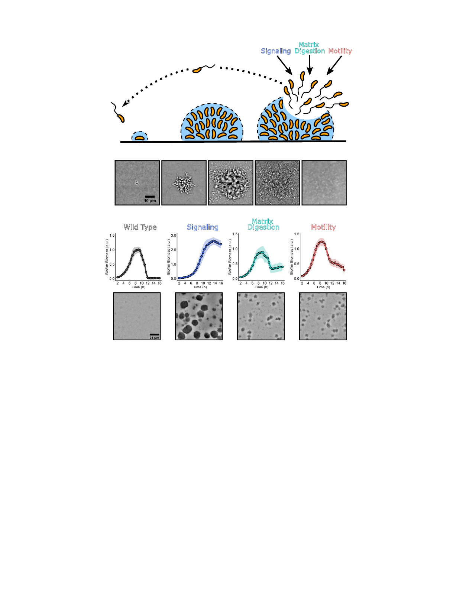

A
Matrix
Signaling Digestion Motility
Attachment
B
Maturation
Dispersal
1 h
C Wild Type
5 h
Signaling
vc1639::Tn5
8 h
10 h
Matrix
Digestion
vca1081::Tn5
(lapG)
16 h
Motility
vc2065::Tn5
(cheY-3)
Fig. 1. A high-content imaging screen identified genes required for V. cholerae biofilm dispersal. (A) Schematic illustrating the V. cholerae biofilm lifecycle.
See text for details. (B) Brightfield image series over time of the WT V. cholerae biofilm lifecycle. (C, Top) Quantitation of biofilm biomass over time as
measured by time-lapse microscopy for WT and representative transposon insertion mutants from each of the three functional categories identified in the
screen. Note the differences in y-axis scales. Data are represented as means normalized to the peak biofilm biomass of the WT strain. n = 3 biological
replicates and n = 3 technical replicates, ± SD (shaded). a.u., arbitrary unit. (C, Bottom) Representative brightfield images of biofilms at the final 16 h
timepoint for the strains presented in C, Top.
we combined mutagenesis with high-content imaging of the
output of this assay. Specifically, WT V. cholerae was mutagen-
ized with Tn5, yielding approximately 7,000 mutants that were
arrayed in 96-well plates. Following overnight growth, the mu-
tants were diluted to low cell density in minimal medium, a
condition that drives initiation of the biofilm lifecycle. Bright-
field images of each well were captured at 8 h postinoculation to
assess biofilm maturation and at 13 h to evaluate biofilm dis-
persal. Mutants that showed no defects in biofilm maturation on
the 8 h images but displayed significant remaining biofilm bio-
mass on the 13 h images were identified.
To verify phenotypes, candidate mutants were individually
reevaluated by time-lapse microscopy. Mutants that accumulated
at the bottom of wells due to aggregation or that failed to attach
to surfaces were excluded from further analysis, eliminating
strains harboring insertions in O-antigen and flagellar genes,
respectively. The locations of transposon insertions in the 47
mutants that met our criteria were defined and corresponded to
10 loci. The new genes from the screen fell into three classes:
signal transduction (blue), matrix degradation (green), and mo-
tility (red) (Fig. 1 A and C). In-frame deletions of each gene were
constructed, and the biofilm lifecycles of the deletion mutants
were imaged to confirm that the genes were required for biofilm
dispersal (Table 1 and Movie S1). We also identified insertions
in genes encoding proteins with known roles in biofilm dispersal
(i.e., RpoS and quorum sensing), which we excluded from fur-
ther analysis (18, 19).
Proteins involved in signal transduction dominated the screen
(7 of 10 loci) and included the ribosome-associated GTPase,
BipA, multiple c-di-GMP signaling proteins, polyamine signaling
proteins, and a putative two-component histidine kinase,
Vc1639. The signal transduction mutants displayed biofilm dis-
persal phenotypes of varying severity. The ΔbipA strain showed a
modest defect, with ∼19% of its biofilm biomass remaining at
16 h, the final timepoint of our data acquisition, while the WT had
∼6% of its biomass remaining at this timepoint. In contrast, the
Δvc1639 mutant underwent no appreciable dispersal (Table 1). In
the category of matrix degradation, two enzymes were identified:
LapG, a periplasmic protease, and RbmB, a putative polysac-
charide lyase (Table 1). A single motility mutant was identified
with an insertion in the gene encoding the chemotaxis response
regulator, cheY3 (Table 1). Below, we report mechanistic studies
Bridges et al.